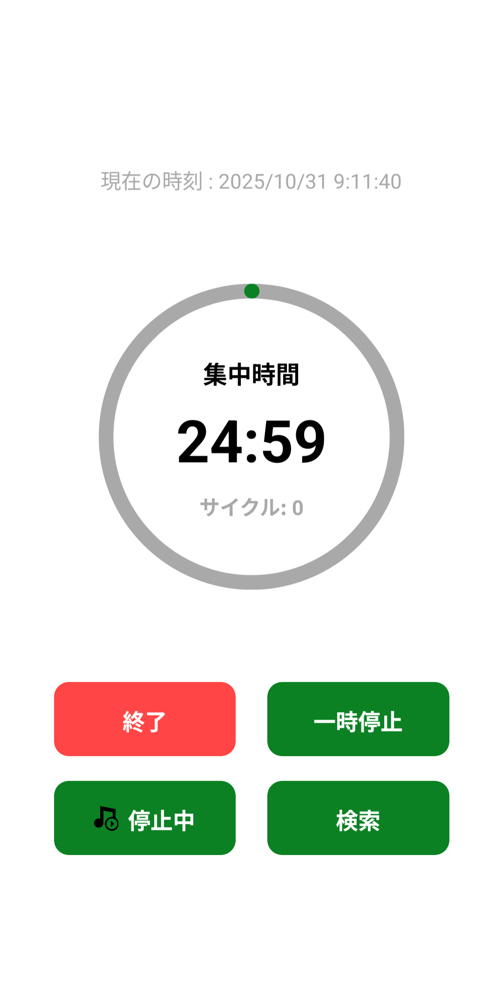
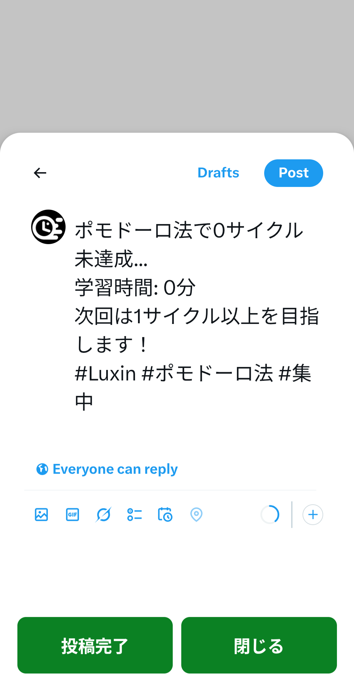
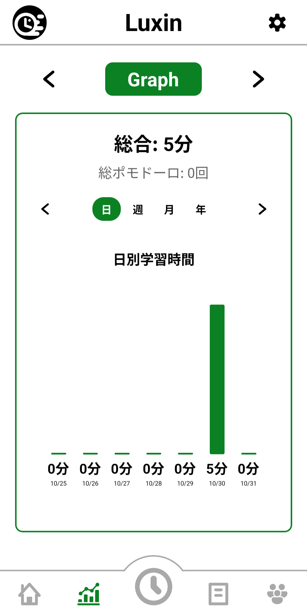
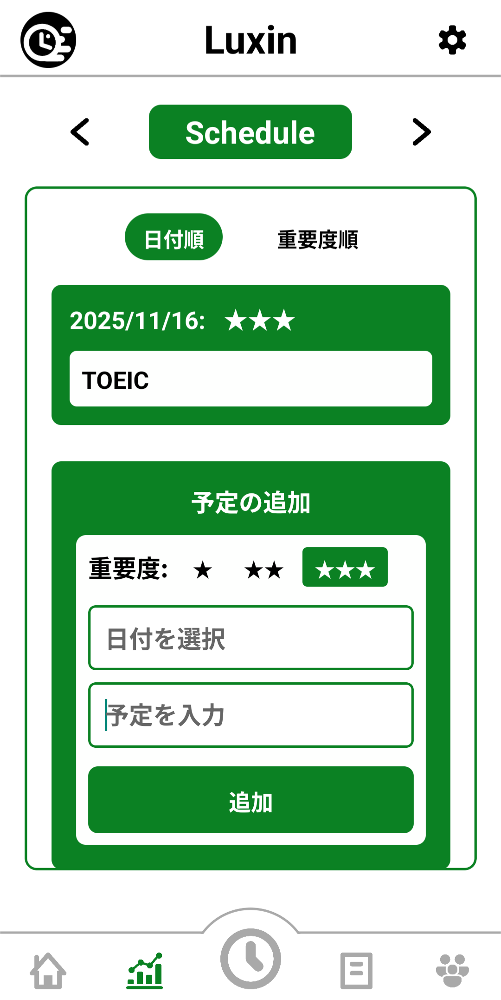
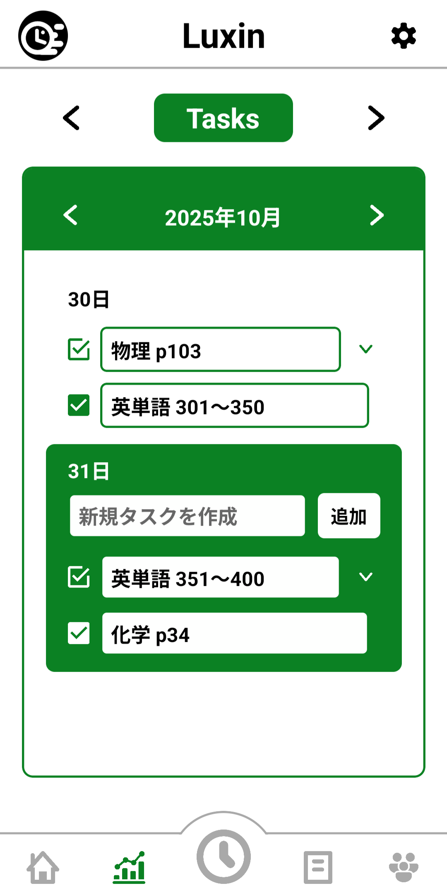
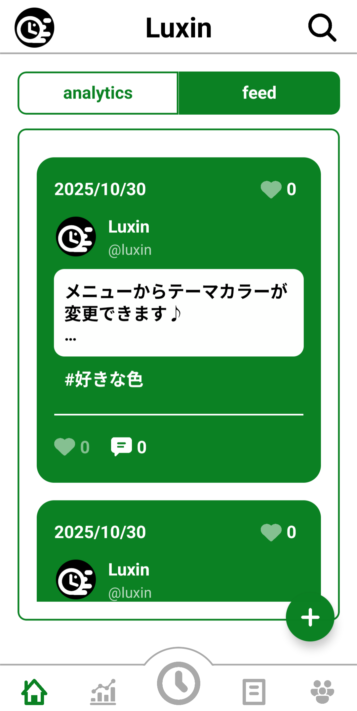
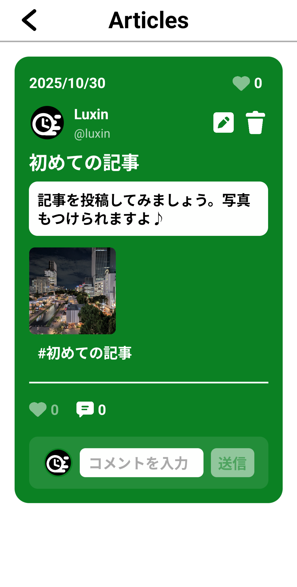
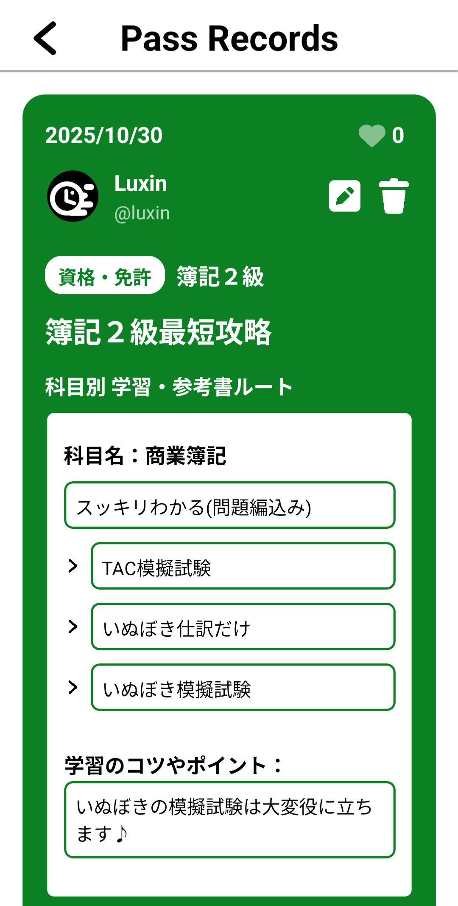

あなたの学習をサポートする
すべてがここに
Luxinは、ポモドーロタイマー、タスク管理、スケジュール管理、学習記録などを
一つのアプリで統合した、学習者向けの包括的なプラットフォームです。
主な機能
ポモドーロタイマー
集中力を高めるポモドーロ法を実践。サイクル記録で学習時間を可視化。
タスク管理
日付別にタスクを整理。重要度別の管理で効率的な学習計画を立てられます。
スケジュール管理
試験や重要なイベントを日付順・重要度順で管理。
学習グラフ
日・週・月・年単位で学習時間をグラフ化。継続的な学習の記録を可視化。
Pass Records
資格試験などの合格記録を共有。科目別の学習ルートや参考書を記録。
Articles
学習に関する記事を投稿・閲覧。コミュニティと知識を共有。
QA機能
質問と回答を投稿して、学習の疑問を解決。
ソーシャル機能
フィード、DM、質問ボックス、コミュニティで学習仲間とつながる。
アプリ画面







